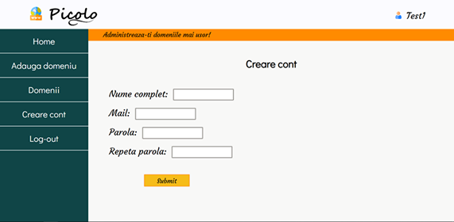
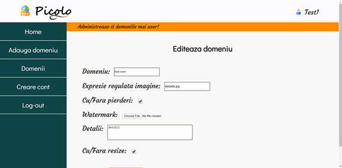
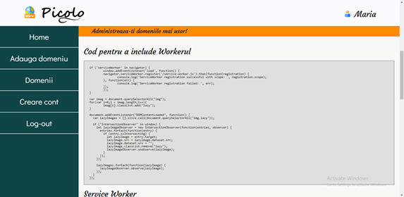
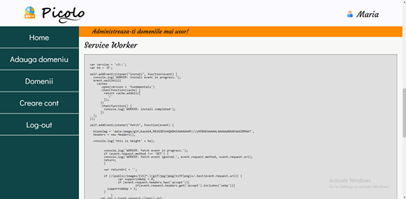

Introducere
Picolo este o platforma online ce permite proprietarilor de situri sa isi optimizeze imaginile de pe un anumit domeniu cu ajutorul unui service worker generat in functie de preferintele utilizatorului.

Picolo este o platforma online ce permite proprietarilor de situri sa isi optimizeze imaginile de pe un anumit domeniu cu ajutorul unui service worker generat in functie de preferintele utilizatorului.
Pentru a putea folosi aplicatia, utilizatorii trebuie sa isi creeze un cont si dupa sa se autentifice. Dupa autentificare au acces complet la aplicatie.

Platforma permite managementul domeniilor ficarui utilizatori. Acestia isi pot adauga sau edita multiple domenii folosind formularele de pe site. La fiecare modificare care se efectueaza pe un domeniu, se genereaza un cod pentru service worker care va fi folosit ulterior.

Pentru a adauga service worker-ul pe site-ul propriu, trebuie intrdus in codul html de baza scriptul de incarcare al service worker-ului.

Se genereaza un fisier js cu numele "service-worker.js" care trebuie pus in folderul pricipal al site-ului.
